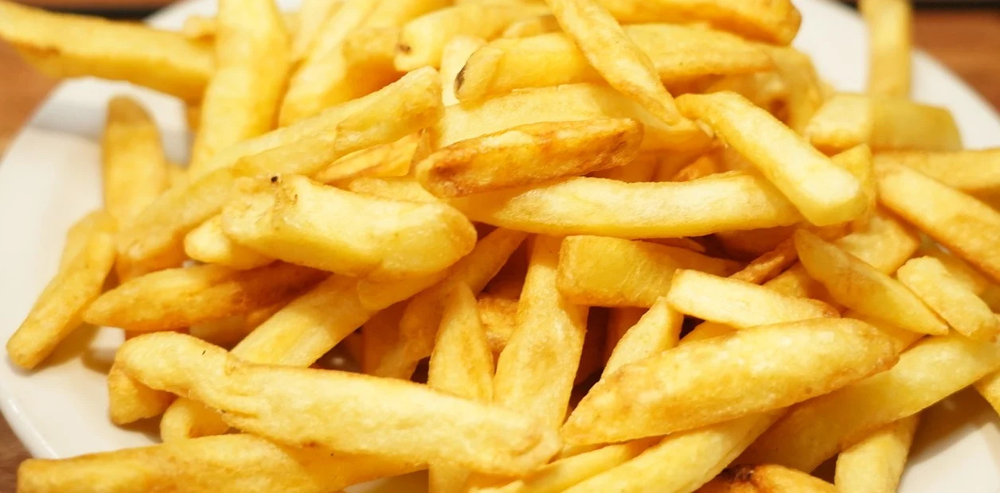

Papas Fritas
Receta de papas fritas caseras

Ingredientes
3 o 4 papas (300gr)
Aceite
Sal
Elaboración
Pelar las papas.
Cortalas en baston.
Calentar aceite en una sarten.
Cocinar hasta que esten doradas.
Removerlas del aceite y salar al gusto.